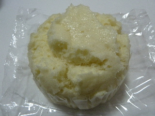

懐かしい感じじゃないなんぽうパンのもっちり蒸しパン。
島根県出雲市知井宮町1274-6
更新日 : 2014/04/23
蒸しパンってなんか懐かしい感じがします。

昔は家で作ってたんですが、今作ろう！とか、作ってもらおう！なんて思わなくなりました。
なまけものになってるのかな？
ちょっと反省なブルーな気分になりました。
この商品は「もっちり蒸しパン」なので昔の蒸しパンのイメージとは違って、どっしりと重量感のある蒸しパンでした。
パンで「もっちり」ってよく見かけますね。好きな人が多いのかな。